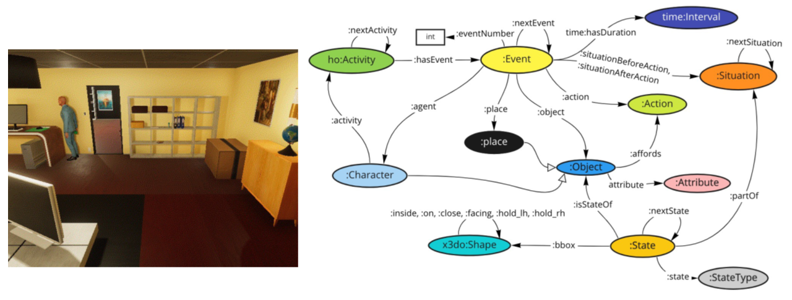

Data Set
Data Set Publication
Table of Contents
How to Use the Knowledge Graph and Videos
GitHub
The knowledge graph is published in Resource Description Framework (RDF) format on GitHub. Corresponding videos are also available.
https://github.com/KnowledgeGraphJapan/KGRC-RDF/tree/kgrc4si
The Knowledge Graph is available in TTL format and in N-TRIPLE format for easy handling as a machine learning data set.
Videos: https://kgrc4si.home.kg/Movie/ or in zip format:https://github.com/KnowledgeGraphJapan/KGRC-RDF/tags
Scene graph data for video is also available on Github in the ActionGenome format.
Viewing the Knowledge Graph in a Web Browser
You can view the knowledge graph in a web browser. It is available at https://kgrc4si.home.kg:7200/, please refer to the GraphDB manual for more details.
SPARQL Endpoint
We provide an endpoint for searching the knowledge graph using SPARQL queries. Please refrain from making a large number of inquiries that could overload the server. Using as an API Parameters: query={URL-encoded SPARQL query}, format={data format (json, xml, csv, ...)}
Example Using Python (rdflib) in Google Colaboratory
Here is an example of using the above SPARQL endpoint with a program (Python) in Google Colab. The same applies to your own Jupyter notebook.
Structure of the Knowledge Graph
The knowledge graph provided for the reasoning challenge is expressed with "events" and corresponding "actions," "main objects," "target objects," "agents," "relationships between scenes (nextEvent)," "times," etc. Please see the slides below for more details.
- Schema (correspondence with video)
 - Example of Knowledge Graph


Sample SPARQL Queries
Retrieve events during the activity of "browsing the internet"
PREFIX ex: Retrieve a list of activities
PREFIX ex: